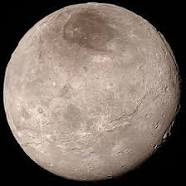

Плутон
найвідоміша мала планета Сонячної системи та найбільший Транснептуновий об'єкт, перший відкритий об'єкт поясу Кормпера
Відомості про Плутон
історія відкриття Плутону
На той час багато дослідників захопилися ідеєю відкриттся планет. Під час теорії Пікерінга який спрогнозував на основі нерегулярностей руху відомих планет кілька нових, невдалі були спроби шукати "планету О", однак на 4 фото які були зроблені попав Плутон. Тоді(1919 р) і було знайдено Плутон. Однак проголошено 9-ю планетою було 1930 р
Маса Плутону
- До 1960-х років було отримано кілька оцінок, близьких до маси Землі
- На початку 1970-х вони зменшилися на порядок, до маси Марса
- На зараз точних цифр не можливо обрахувати, але відомо що він менше місяця
Будова Плутону
Дослідники вважають, що в минулому Плутон зіткнувся з космічним об'єктом немалого розміру. Це утворило навколо нього супутникову систему. Також це дуже нагріло ййому якдро. Плутон здебільшого складається з каменю та льоду. Якщо ростопити весь лід з якого він складається, то води вистачити навіть на утворення підповерхневого океану води.
Супутники
Харон
Найбільший із п'яти відомих супутників карликової планети Плутона, відомий також під назвою «Плутон I». Гравітаційний вплив Харона на Плутон настільки великий, що барицентр системи Плутон — Харон лежить поза Плутоном. Через це його інколи вважають компонентом подвійної планетної системи Плутон — Харон.
Нікта
Карликовий супутник Плутона, відомий також під назвою «Плутон II»
Гідра
Карликовий супутник Плутону, відомий також під назвою «Плутон III»
Кербер
Четвертий спутник Плутона. Як і більшість супутників вкритий порівняно чистим водяним льодом
Стікс
П'ятий найменший супутник Плутона
Узагальнення відомостей про Плутон
- Плутон-карликова планета
- Плутон за розміра менший за місяць
- Так як Плутон знаходиться дуже далеко від сонця, на ньому дуже холодно
- практично вся його поверхня складається з льоду
Цікаві Факти
- З усіх відкритих карликових планет-Плутон — найбільша, але не сама масивна — пальма першості в цій номінації належить Эриде
- Якби Плутон виявився ближче до Сонця, він обзавівся б хвостом, подібно кометі
- Лід на поверхні Плутона міцніше, ніж загартована сталь
- З поверхні Плутона Сонце буде здаватися всього лише маленькою крапкою
- Якщо Плутон наблизиться до Сонця, то він перетвориться на комету, так як в основному складається з льоду
- Сонячне світло доходить до Плутона за 5 годин. До землі — за вісім хвилин